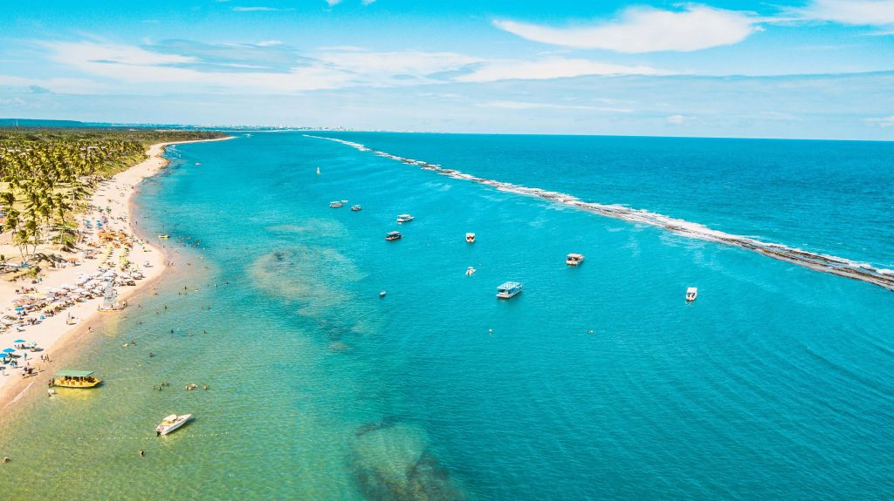
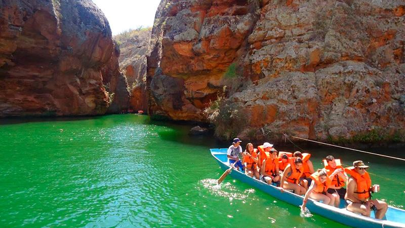
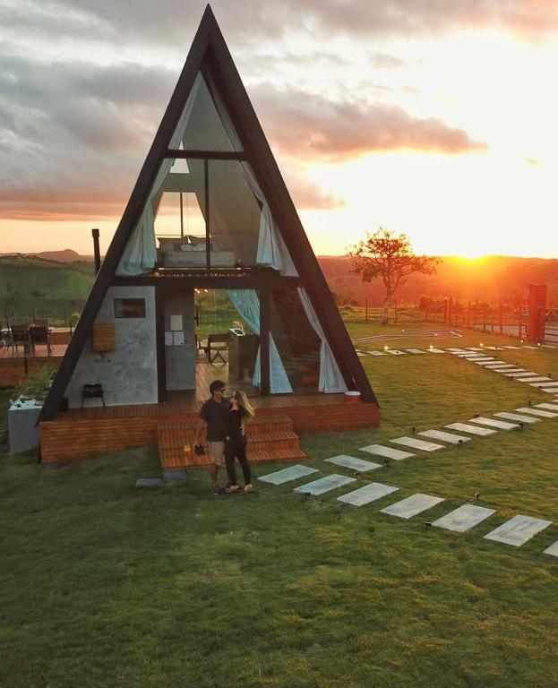

Alagoas é um estado brasileiro que compõe a região Nordeste, com capital no município de Maceió.
Seu relevo é formado por depressões e por planaltos, e os climas encontrados no estado são o semiárido
e o tropical. A atual população alagoana é de pouco mais de 3,1 milhões de habitantes, vivendo a
maioria nas cidades. Atualmente, a economia alagoana se destaca pela produção de cana-de-açúcar e
pela indústria ligada a esse cultivo.
PRINCINPAIS ATRAÇÕES
O turismo é o principal componente do setor de serviços, além de ser a atividade que mais cresce
no estado. Alagoas possui 40 municípios com potencial turístico, onde os visitantes podem desfrutar
de belas praias, rios e de cidades históricas. Entre as belas praias estão as da Região Metropolitana
de Maceió, a praia do Francês (principal destino dos turistas) e a praia de Parapueira. Marechal Deodoro,
antiga capital de Alagoas, preserva as construções do período colonial. Outra importante atração é o Rio
São Francisco, mais conhecido como “Velho Chico”.
PRAIAS
Praia do frânces
A Praia do Francês, localizada a 28,4 km de Maceió, em Alagoas, é um destino turístico encantador,
com belezas naturais, atividades náuticas e ótima infraestrutura. Suas águas cristalinas, protegidas por
barreiras de corais, formam piscinas naturais perfeitas para mergulho e snorkel. Os coqueirais e a areia
branca criam um cenário deslumbrante, especialmente ao pôr do sol.
A praia oferece diversas atividades, como surfe, passeios de jangada, escuna, caiaque e stand up paddle.
O clima ensolarado o ano todo garante dias perfeitos para explorar o litoral alagoano. A região também
possui uma rica história, com tradição de pescadores e rendeiras, além de bons restaurantes e acomodações.
A Praia do Francês é, sem dúvida, um destino imperdível para quem visita Alagoas.
A praia oferece diversas atividades, como surfe, passeios de jangada, escuna, caiaque e stand up paddle.
O clima ensolarado o ano todo garante dias perfeitos para explorar o litoral alagoano. A região também
possui uma rica história, com tradição de pescadores e rendeiras, além de bons restaurantes e acomodações.
A Praia do Francês é, sem dúvida, um destino imperdível para quem visita Alagoas.
Rio São Francisco
A região do Rio São Francisco em Alagoas é um destino turístico encantador, repleto de história, cultura
e belezas naturais. Entre os principais pontos turísticos estão os Cânions do Rio São Francisco, com
suas impressionantes formações rochosas que cortam o trajeto do rio entre Sergipe e Alagoas, e a Foz do
Rio São Francisco, uma área preservada onde o rio encontra o mar. A cidade de Piaçabuçu, cenário do filme
“Deus é Brasileiro”, e Penedo, com suas igrejas antigas e escadarias, também são atrações imperdíveis.
Piranhas, uma cidade sertaneja, encanta pela história e beleza.
Os visitantes podem desfrutar de atividades como navegação pelo rio, cruzar dunas de areia branca,
mergulhar nas piscinas naturais da Pajuçara e conhecer pontos turísticos históricos, como o Museu Paço
Imperial e a área de Preservação Ambiental da Marituba do Peixe. Também é possível visitar o sítio histórico de Angiquinho.
O Rio São Francisco tem grande importância para a região, sendo essencial economicamente, socialmente e
culturalmente para diversas comunidades, incluindo indígenas e quilombolas. Além disso, o rio é utilizado
para navegação, irrigação, abastecimento de água e produção de energia elétrica.
Caminho da serra
O Caminho da Serra em Alagoas é uma rota encantadora que liga o litoral ao sertão, oferecendo belas
]
paisagens de serras, rios e vegetação típica. A região é rica em cultura, com pequenas cidades que
preservam tradições e história, além de atrações naturais como as piscinas naturais de Ipioca.
Já o Mar Vermelho, no litoral norte, é famoso por suas águas cristalinas e bancos de areia
que surgem na maré baixa. Com barreiras de corais e vida marinha exuberante, é ideal para atividades como snorkeling e mergulho.
Tanto o Caminho da Serra quanto o Mar Vermelho são destinos imperdíveis para quem quer explorar as belezas naturais e culturais de Alagoas.